ML implements feed-forward artificial neural networks or, more particularly, multi-layer perceptrons (MLP), the most commonly used type of neural networks. MLP consists of the input layer, output layer, and one or more hidden layers. Each layer of MLP includes one or more neurons directionally linked with the neurons from the previous and the next layer. The example below represents a 3-layer perceptron with three inputs, two outputs, and the hidden layer including five neurons:

All the neurons in MLP are similar. Each of them has several input links (it takes the output values from several neurons in the previous layer as input) and several output links (it passes the response to several neurons in the next layer). The values retrieved from the previous layer are summed up with certain weights, individual for each neuron, plus the bias term. The sum is transformed using the activation function
 that may be also different for different neurons.
that may be also different for different neurons.

In other words, given the outputs
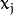 of the layer
 , the outputs
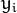 of the layer
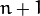 are computed as:
, the outputs
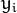 of the layer
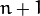 are computed as:
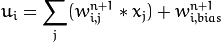
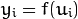
Different activation functions may be used. ML implements three standard functions:
Identity function ( ANN_MLP::IDENTITY ): 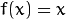
Symmetrical sigmoid ( ANN_MLP::SIGMOID_SYM ): 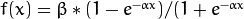 ), which is the default choice for MLP. The standard sigmoid with 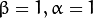 is shown below:
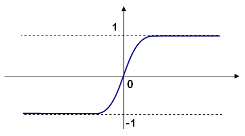Gaussian function ( ANN_MLP::GAUSSIAN ): 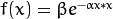 , which is not completely supported at the moment.
In ML, all the neurons have the same activation functions, with the same free parameters ( 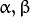 ) that are specified by user and are not altered by the training algorithms.
So, the whole trained network works as follows:
So, to compute the network, you need to know all the weights 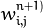 . The weights are computed by the training algorithm. The algorithm takes a training set, multiple input vectors with the corresponding output vectors, and iteratively adjusts the weights to enable the network to give the desired response to the provided input vectors.
The larger the network size (the number of hidden layers and their sizes) is, the more the potential network flexibility is. The error on the training set could be made arbitrarily small. But at the same time the learned network also “learns” the noise present in the training set, so the error on the test set usually starts increasing after the network size reaches a limit. Besides, the larger networks are trained much longer than the smaller ones, so it is reasonable to pre-process the data, using PCA::operator() or similar technique, and train a smaller network on only essential features.
Another MLP feature is an inability to handle categorical data as is. However, there is a workaround. If a certain feature in the input or output (in case of n -class classifier for 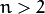 ) layer is categorical and can take 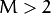 different values, it makes sense to represent it as a binary tuple of M elements, where the i -th element is 1 if and only if the feature is equal to the i -th value out of M possible. It increases the size of the input/output layer but speeds up the training algorithm convergence and at the same time enables “fuzzy” values of such variables, that is, a tuple of probabilities instead of a fixed value.
ML implements two algorithms for training MLP’s. The first algorithm is a classical random sequential back-propagation algorithm. The second (default) one is a batch RPROP algorithm.
| [BackPropWikipedia] | http://en.wikipedia.org/wiki/Backpropagation. Wikipedia article about the back-propagation algorithm. |
| [LeCun98] |
|
| [RPROP93] |
|
Parameters of the MLP and of the training algorithm. You can initialize the structure by a constructor or the individual parameters can be adjusted after the structure is created.
The network structure:
The number of elements in each layer of network. The very first element specifies the number of elements in the input layer. The last element - number of elements in the output layer.
The activation function. Currently the only fully supported activation function is ANN_MLP::SIGMOID_SYM.
The first parameter of activation function, 0 by default.
The second parameter of the activation function, 0 by default.
Note
If you are using the default ANN_MLP::SIGMOID_SYM activation function with the default parameter values fparam1=0 and fparam2=0 then the function used is y = 1.7159*tanh(2/3 * x), so the output will range from [-1.7159, 1.7159], instead of [0,1].
The back-propagation algorithm parameters:
Strength of the weight gradient term. The recommended value is about 0.1.
Strength of the momentum term (the difference between weights on the 2 previous iterations). This parameter provides some inertia to smooth the random fluctuations of the weights. It can vary from 0 (the feature is disabled) to 1 and beyond. The value 0.1 or so is good enough
The RPROP algorithm parameters (see [RPROP93] for details):
Initial value 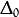 of update-values 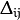.
Increase factor 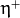. It must be >1.
Decrease factor 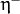. It must be <1.
Update-values lower limit 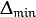. It must be positive.
Update-values upper limit 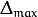. It must be >1.
Construct the parameter structure
| Parameters: |
|
|---|
By default the RPROP algorithm is used:
ANN_MLP_TrainParams::ANN_MLP_TrainParams()
{
layerSizes = Mat();
activateFun = SIGMOID_SYM;
fparam1 = fparam2 = 0;
term_crit = TermCriteria( TermCriteria::MAX_ITER + TermCriteria::EPS, 1000, 0.01 );
train_method = RPROP;
bpDWScale = bpMomentScale = 0.1;
rpDW0 = 0.1; rpDWPlus = 1.2; rpDWMinus = 0.5;
rpDWMin = FLT_EPSILON; rpDWMax = 50.;
}
MLP model.
Unlike many other models in ML that are constructed and trained at once, in the MLP model these steps are separated. First, a network with the specified topology is created using the non-default constructor or the method ANN_MLP::create(). All the weights are set to zeros. Then, the network is trained using a set of input and output vectors. The training procedure can be repeated more than once, that is, the weights can be adjusted based on the new training data.
Creates empty model
Use StatModel::train to train the model, StatModel::train<ANN_MLP>(traindata, params) to create and train the model, StatModel::load<ANN_MLP>(filename) to load the pre-trained model. Note that the train method has optional flags, and the following flags are handled by ANN_MLP:
- UPDATE_WEIGHTS Algorithm updates the network weights, rather than computes them from scratch. In the latter case the weights are initialized using the Nguyen-Widrow algorithm.
- NO_INPUT_SCALE Algorithm does not normalize the input vectors. If this flag is not set, the training algorithm normalizes each input feature independently, shifting its mean value to 0 and making the standard deviation equal to 1. If the network is assumed to be updated frequently, the new training data could be much different from original one. In this case, you should take care of proper normalization.
- NO_OUTPUT_SCALE Algorithm does not normalize the output vectors. If the flag is not set, the training algorithm normalizes each output feature independently, by transforming it to the certain range depending on the used activation function.